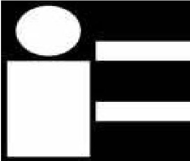

|

英國
T&R
|
直流耐壓試驗器、交流耐壓試驗器、
絕緣油耐壓試驗器、
各式電驛測試器、無熔絲開關測試器、
數位電驛測試器，
大電流低阻計、大電流產生器等。
|
|
英國 GE DRUCK
|
數字式壓力校正器、多功能壓力校正器、
液壓式重錘壓力校正器、空氣式重錘壓力校正器、
可攜式重錘壓力校正器，
液壓壓力產生器、空氣壓力產生器、
微壓壓力產生器，
數字式微壓計、油水分離器、壓力錶頭等。
|
|

英國 CROPICO
|
各種範圍十進位電阻箱、RTD模擬電阻箱，
單體標準電阻器、多範圍標準電阻器，
絕緣高電阻校正器、數字式低阻計等。
|
|

義大利 EUROTRON
|
製程儀控校正儀器：
精密數字溫度計、高低溫各種溫度校正爐、
多功能溫度信號校正器，數字式壓力校正器、
多功能壓力校正器，
紅外線測溫器、紅外線熱像儀
及工業用紅外線溫度感測器。
|
|

德國 RHEIN TACHO
|
數字式接觸/非接觸兩用光電轉速計、閃頻儀。 |
|
日本共立儀器
|
數字式三用電錶、指針型三用電錶、
名片型三用電錶，
數字式高阻計、指針式高阻計、高壓高阻計，
數字式接地電阻計、指針式接地電阻計、
鉤式接地電阻計，
相序指示計、電壓偵測器、漏電斷路器測試器、
交流測量鉤錶、交直流兩用鉤錶、洩漏電流鉤錶、
電力及諧波分析儀、電源品質分析儀，
電壓電流記錄器、洩漏電流記錄器、
異常電壓記錄器、變壓器負載電流記錄器等。
|
日本長谷川電機
|
各式高低壓檢電器、活線作業高壓近接警報器等。 |
|
日本
KAISE CORPORATION
|
數字式三用電錶、指針型三用電錶、
名片型三用電錶，
數字式高阻計、指針式高阻計、洩漏電流鉤錶等。
|
|
其他進口
＆
國產儀器經銷代理
|
61/2精密電錶、示波器、函數波產生器、
頻率計數器、頻譜分析儀、精密電力分析儀、
可程式電阻測量儀、直流電源供應器、
交流變頻電源供應器、高壓計、靜電高壓計、
LCR測試器、安規測試器等。電磁場計、磁通計、
瓦斯偵測器、CO偵測器、四用氣體偵測器、
冷媒探漏器、測距儀、照度計、噪音計、振動計、
風速風溫計、溫濕度計、溫度蒐集器等。
分析記錄器、多功能溫度打點記錄器、
筆式記錄器、溫濕度記錄器、免紙記錄器等。
|